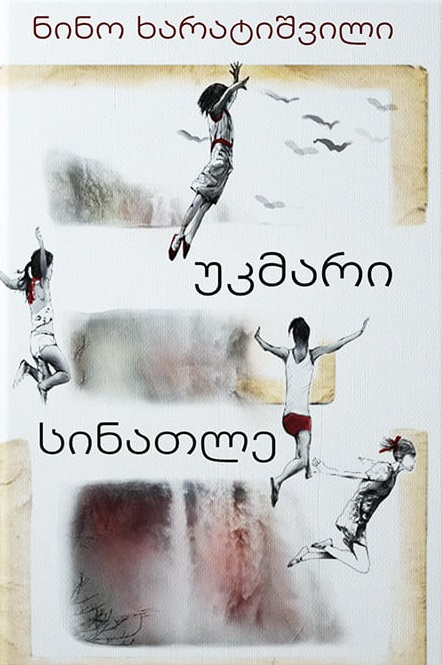
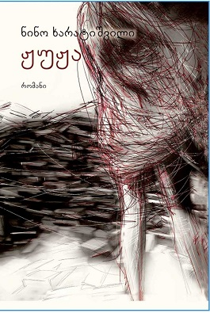
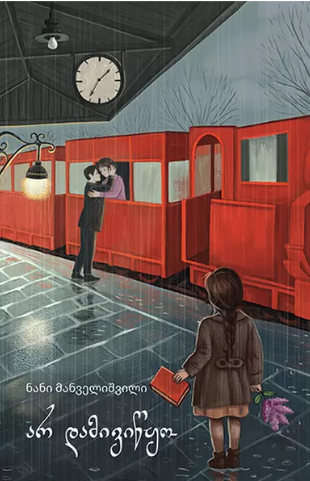
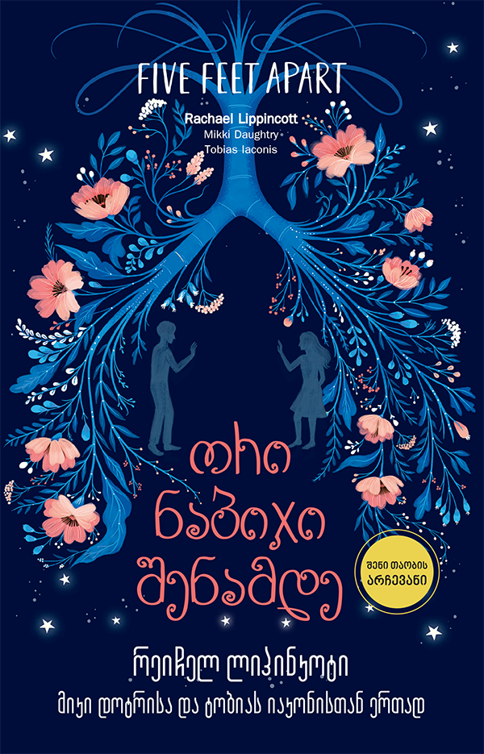
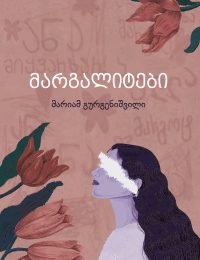
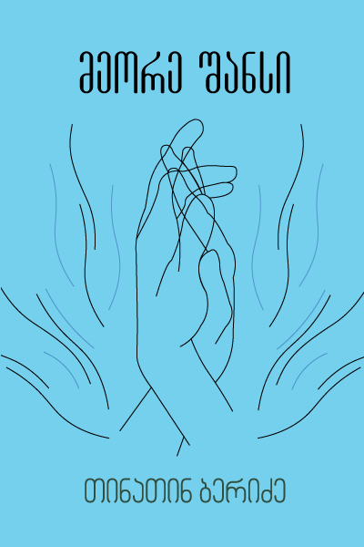
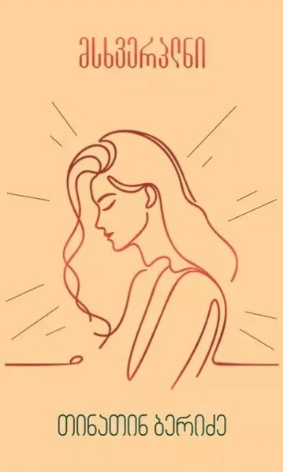

სიამაყე და ცრურწმენა

მზე ,მთვარე და პურის ყანა
სიუჟეტი მოგვითხრობს ერთი თბილისელი ბიჭის, ჯუდეს, დარდითა და ტკივილით სავსე, თავბრუდამხვევ ცხოვრებაზე საბჭოთა და პოსტსაბჭოთა პერიოდში. უდანაშაულო მთავარ გმირს კრიმინალებისა და პროკურატურის შეთანხმებული მოქმედებით ციხეში უსამართლოდ სვამენ. წიგნი არის უმძიმეს პირობებში გადარჩენის, ღირსების შენარჩუნებისა და იმ დიდი სიყვარულის ამბავი, რომლის გამოც ადამიანს ყველაფრის გაძლება შეუძლია, რადგან იცის, რომ სადღაც მასზე ერთი გული მაინც ფიქრობს.

უკმარი სინათლე
სიუჟეტი 80-იანი წლების მიწურულისა და 90-იანების დასაწყისის თბილისში ვითარდება. ის მოგვითხრობს ოთხი გოგონას — დინას, ირას, ნენესა და ქეთოს უპირობო მეგობრობაზე, რომელთაც სამოქალაქო ომის ქაოსში, ძალადობასა და უშუქობაში უწევთ გაზრდა. წლების შემდეგ, ისინი ბრიუსელში, გარდაცვლილი მეგობრის ფოტორეტროსპექტივაზე კვლავ ხვდებიან ერთმანეთს. ეს არის უაღრესად ემოციური ამბავი სიყვარულზე, ღალატზე, ტრაგედიასა და დაკარგულ თაობაზე, რომელიც საკუთარ წარსულთან თვალის გასწორებას ცდილობს.

ჟუჟუ
რომანი შთაგონებულია 1940-იანი წლების საფრანგეთში მომხდარი ტრაგიკული ისტორიით, სადაც 14-მა ახალგაზრდა ქალმა სიცოცხლე თვითმკვლელობით დაასრულა, რისი მიზეზიც იდუმალი მწერლის, ჟან სარეს სკანდალური წიგნი გახდა. სიუჟეტში ერთმანეთს კვეთს სხვადასხვა ეპოქისა და სხვადასხვა ქალაქის (პარიზი, ჰამბურგი, თბილისი) მცხოვრები რამდენიმე ადამიანის ბედი, რომელთა ცხოვრებასაც ეს ძველი, მისტიკური წიგნი რადიკალურად ცვლის.

არ დამივიწყო
სამყაროში ვრცელდება უცნაური ამნეზია, როცა ადამიანებს ყველაფერი ავიწყდებათ, გარდა ერთი კონკრეტული პიროვნებისა. პარალელურად, სტუდენტი გოგონა ლენე ცდილობს ბებიის ბურუსით მოცული წარსულისა და ძველი დღიურების საიდუმლოების ამოხსნას, რაც მას მეორე მსოფლიო ომის პერიოდში აბრუნებს.

ყველაფერი იწყება ჩვენით
წიგნი მოგვითხრობს ლილისა და მისი პირველი სიყვარულის, ატლასის ურთიერთობის განახლებაზე. ლილი ცდილობს, მოძალადე ყოფილი ქმრის, რაილის მუდმივი ეჭვიანობისა და ხელის შეშლის მიუხედავად, ააწყოს ახალი, მშვიდი ცხოვრება და მისცეს თავის თავს ბედნიერების შანსი.
აღიარება ხელისგულზე
ჟურნალისტიკის ფაკულტეტის სტუდენტი რადა მოდებაძე შინაგანი კომპლექსებით, შიშებითა და გარესამყაროსთან კონფლიქტით იტანჯება. სოციალური ბულინგისა და უყურადღებობის გამო ის იწყებს ბოროტი და საფრთხის შემცველი გზების გამოყენებას ყურადღების მისაქცევად, რაც მის ცხოვრებას რადიკალურად ცვლის. ეს არის ემოციური ამბავი შეცდომებზე, სინანულსა და საკუთარ თავთან ბრძოლაზე.
ორი ნაბიჯი შენამდე
ორი თინეიჯერი, სტელა და უილი, ფილტვების მძიმე გენეტიკური დაავადებით (კისტოზური ფიბროზით) იტანჯებიან. მათ ერთმანეთი უყვარდებათ, თუმცა მკაცრი სამედიცინო წესის გამო, ინფექციის თავიდან ასაცილებლად, აკრძალული აქვთ ერთმანეთთან მიახლოება და მუდმივად რამდენიმე ნაბიჯის დისტანცია უნდა დაიცვან.

უთაო მხედარი
მოქმედება მე-19 საუკუნის ტეხასში ვითარდება. მუსტანგების დამჭერ მორის ჯერალდსა და მდიდარი პლანტატორის ქალიშვილ ლუიზა პოინდექსტერს ერთმანეთი შეუყვარდებათ. სიუჟეტი მკვეთრად იძაბება, როდესაც ლუიზას ძმა უგზო-უკვლოდ იკარგება, პრერიებში კი ჩნდება საზარელი და იდუმალი ფიგურა — უთავო მხედარი.

მარგალიტები
რომანი მკითხველს 1990-იანი წლების თბილისში ამოგზაურებს. სიუჟეტი მოგვითხრობს სამი მოზარდი გოგონას — მარგოს, ანასა და ბელას ცხოვრებაზე, რომლებიც მძიმე, უდენო და ნავთქურიან რეალობაში ნაადრევად იზრდებიან, თუმცა მაინც ახერხებენ შეინარჩუნონ ბავშვური ოცნებები და უანგარო სიყვარული.

მობილურ
მოულოდნელად, მობილური ტელეფონების ქსელში ვრცელდება უცნაური სიგნალი, რომელიც ყველა მოლაპარაკე ადამიანს მომენტალურად აგრესიულ, გონებადაკარგულ მკვლელად აქცევს. მთავარი გმირი, კლეიტონ რიდლი, ცდილობს გადარჩეს ამ პოსტაპოკალიპტურ ქაოსში და იპოვოს თავისი შვილი
მოპარული სიყვარული
წიგნების სიუჟეტი ტრიალებს მყუდრო, წიგნის მოყვარულთა კაფეს გარშემო, სადაც ახალგაზრდების გზები შემთხვევით იკვეთება. ეს არის დრამატული და ემოციური ისტორიები დიდ გრძნობებზე, იმედგაცრუებაზე, შეცდომებზე და იმაზე, თუ რამდენად გვაძლევს ცხოვრება ახალი ბედნიერების პოვნის „მეორე შანსს“.

მეორე შანსი
მას შემდეგ, რაც გმირებმა უამრავი ტკივილი, იმედგაცრუება და შეცდომა გამოიარეს, რომანი სვამს მთავარ კითხვას: შეუძლია თუ არა ადამიანს წარსულის ტრავმების დავიწყება და გვაძლევს თუ არა ცხოვრება ახალი ბედნიერების პოვნის, ანუ იმავე „მეორე შანსს“.

მსხვერპლნი
წიგნი ეხება უკიდურესად აქტუალურ და მტკივნეულ თემას — ფემიციდსა და ქალთა მიმართ ძალადობას. სიუჟეტი აგებულია სხვადასხვა ქალის სასტიკ, რეალისტურ და აღმაშფოთებელ ისტორიებზე, რომლებიც ძალადობას ოჯახში, სამსახურში, სკოლასა თუ ქუჩაში განიცდიან. ნაწარმოებს მთავარ ხაზად გასდევს ფემიციდის ერთგვარი „გათამაშებული“, დადგმული სცენა, რომელიც მკითხველს დახურულ კარს მიღმა არსებულ მძიმე რეალობაზე.
